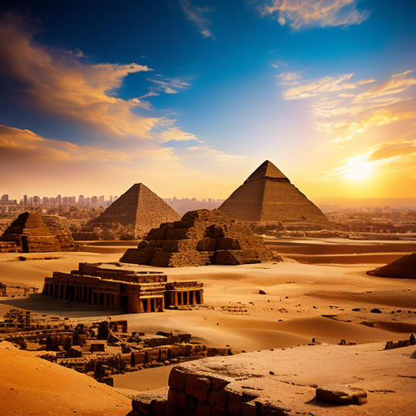
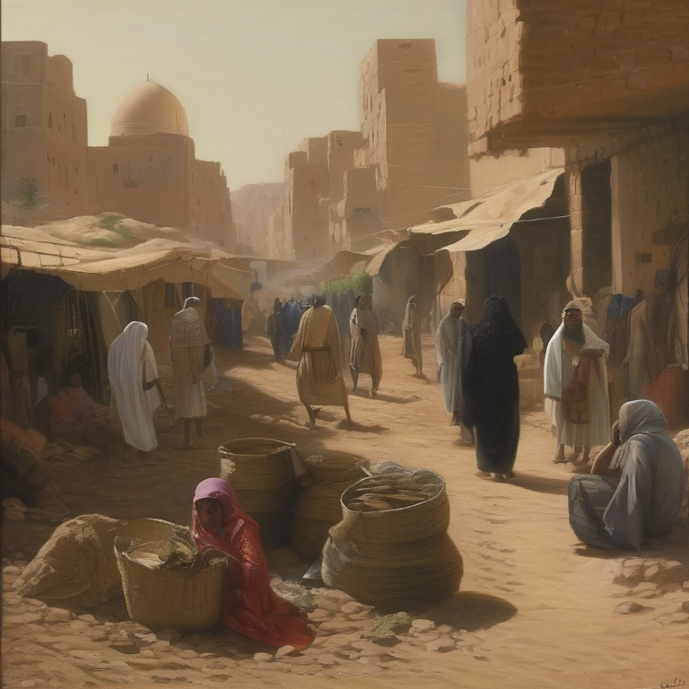

Древнеегипетская цивилизация просуществовала почти 7000 лет. Египетские фараоны были современниками огромного количества исторических событий: основания Вавилона, осады Трои, войн персов и греков, возвышения Рима.
Древний Египет будет загадочным для умы учёных и обывателей с тех самых пор, как впервые был расчищен от песка Большой Сфинкс. И хотя археологи сделали уже немало открытий, связанных с Египтом, земля фараонов хранит под своими песками ещё множество тайн.
Интересно, что весь период нашей эры длится меньше, чем власть фараонов в объединенном Египте!
| Верхний Египет | Нижний Египет |
|---|---|
| Царство, расположенное в южной части Египта. | Царство, расположенное в северной части Египта. |
|  |  |